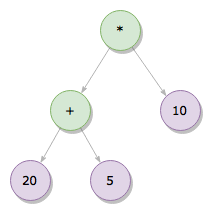
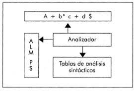

¿Qué es un Esquema de Traducción?
Un esquema de traducción es una gramática enriquecida con atributos y acciones semánticas que permite transformar código fuente en una representación intermedia o código destino. Se utilizan en compiladores para asegurar que un programa no solo sea sintácticamente correcto, sino también semánticamente coherente.
- Atributos Sintetizados: Se propagan desde los hijos hacia el nodo padre (por ejemplo, tipo de una expresión).
- Atributos Heredados: Se transmiten desde el nodo padre hacia los hijos (por ejemplo, el tipo esperado de una variable).
Árboles de Expresiones
Son estructuras jerárquicas que representan operaciones y operandos de una expresión. Existen dos tipos principales:
- Árbol de Sintaxis Abstracta (AST): Representa la lógica del código omitiendo detalles sintácticos.
- Árbol de Sintaxis Concreta (CST): Incluye todos los elementos del lenguaje, útil para depuración.
Estos árboles son clave para validar semántica, optimizar código y generar instrucciones ejecutables.
Tablas de Símbolos y Direcciones
Estas estructuras son fundamentales en la compilación:
- Tabla de Símbolos: Almacena información sobre identificadores (nombre, tipo, valor).
- Tabla de Direcciones: Registra las ubicaciones en memoria de variables y constantes.
Ambas ayudan a detectar errores, optimizar código y asegurar la coherencia del programa.
Manejo de Errores Semánticos
Aunque el código sea sintácticamente correcto, pueden surgir errores cuando su significado es inválido. Ejemplos:
- Usar variables no declaradas.
- Realizar operaciones entre tipos incompatibles (ej. sumar un número con una cadena).
- Aplicar operadores de forma incorrecta.
El manejo adecuado de estos errores garantiza programas más robustos y confiables.
Pila Semántica
Durante el análisis sintáctico, se utiliza una pila semántica para almacenar atributos como valores, direcciones y tipos. Esta pila facilita la evaluación de expresiones y la construcción de estructuras intermedias, especialmente en analizadores tipo LR.
